はじめての設定
ダウンロードしてから使い始めるまでの流れです。相手を招くのはあとからでもよく、ひとりで使い始められます。
横にずらすと、次の手順が見られます。
-
手順1アプリを開く
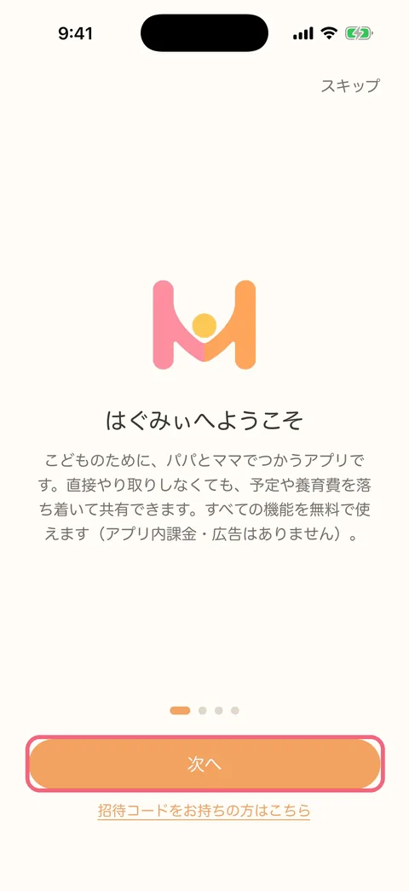
はぐみぃを開くと、できることの紹介が出ます。「次へ」で読み進めます。招待コードをもらった方は、下の「招待コードをお持ちの方はこちら」から進みます。
-
手順2アカウントを作る
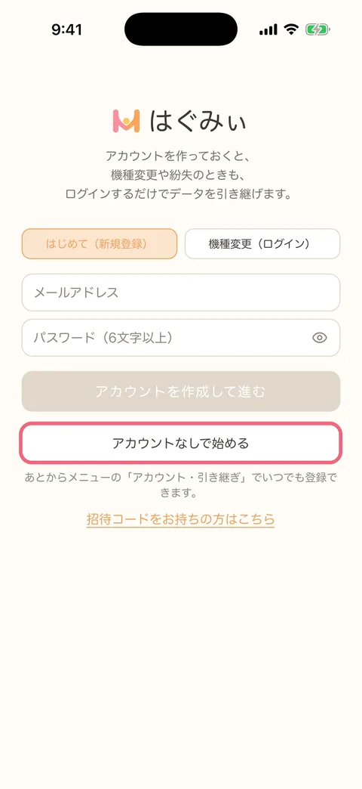
メールアドレスとパスワードでアカウントを作ると、機種を変えても記録を引き継げます。あとで作る場合は「アカウントなしで始める」を押します。
-
手順3子どもとあなたのことを入れる
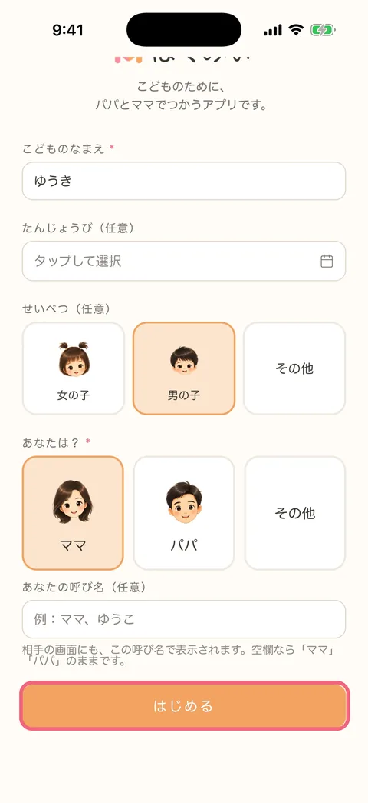
子どもの呼び名を入れ、あなたがママかパパかを選んで「はじめる」を押します。誕生日や性別は、あとからでも入れられます。
-
手順4相手を招くか選ぶ
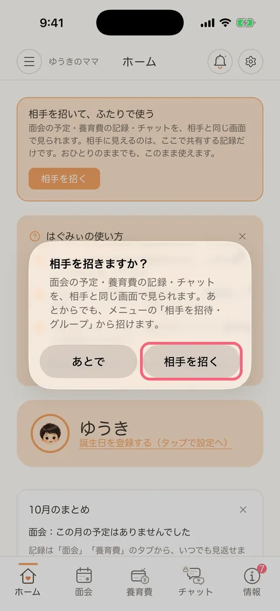
相手を招くと、面会の予定や養育費の記録を同じ画面で見られます。今すぐでなくても、「あとで」を選んでひとりで使い始められます。
-
手順5招待コードを送る
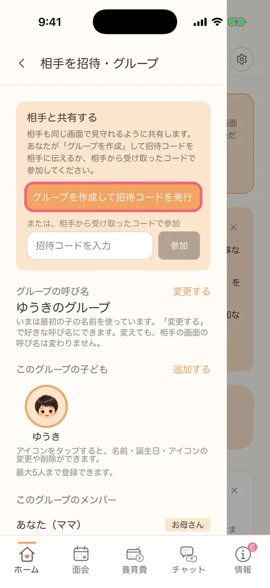
左上の三本線を押してメニューを開き、「相手を招待・グループ」を押します。グループを作って招待コードを発行すると、共有の画面からそのまま相手に送れます。相手を招くにはアカウントが必要です。
-
手順6ホームで今を確かめる
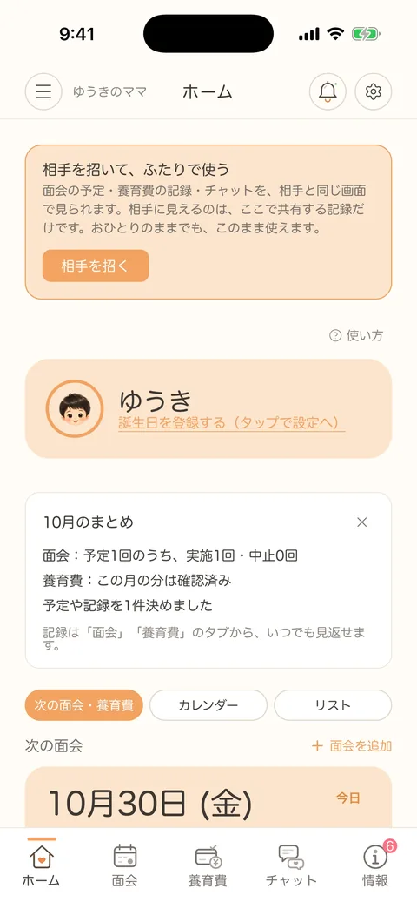
ホームには、次の面会、確認を待っていること、今月のまとめが並びます。下のタブで、面会・養育費・チャット・情報に移れます。
面会交流
面会の予定を相手に提案し、承認されたら確定します。当日の連絡と、終わったあとの記録もここでできます。
横にずらすと、次の手順が見られます。
-
手順1面会を追加する
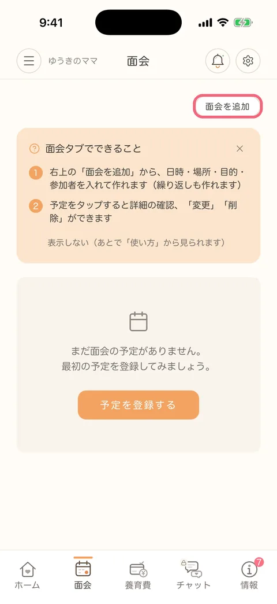
下のタブの「面会」を開き、右上の「面会を追加」を押します。
-
手順2日時と場所を入れる
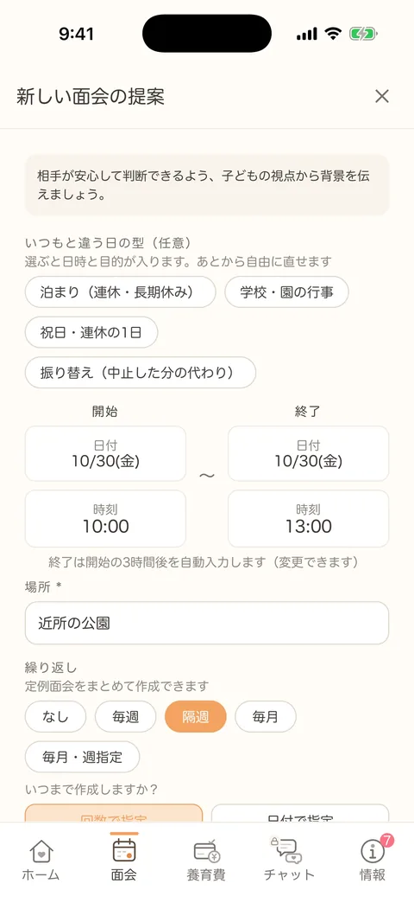
日にちと時間、場所を入れます。毎週や隔週など、繰り返しの予定もまとめて作れます。
-
手順3目的と送り迎えを決める
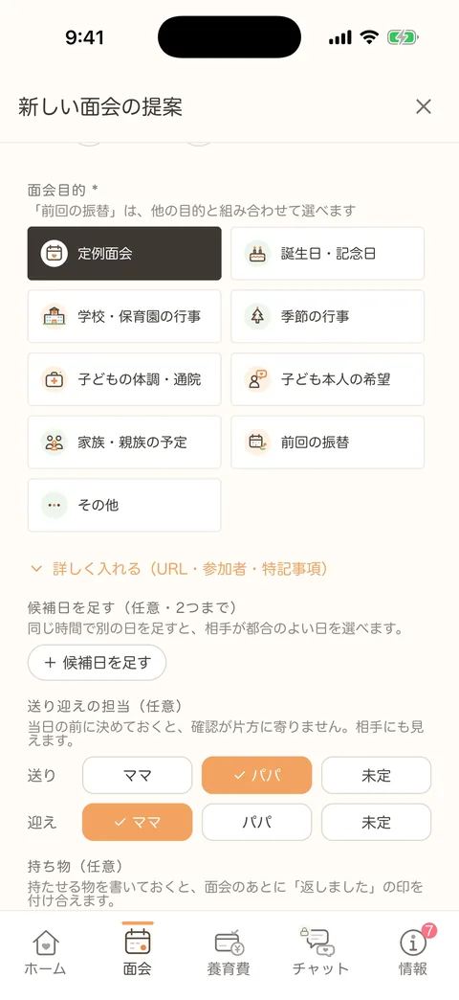
面会の目的と、送りと迎えの担当を選びます。担当を先に決めておくと、当日の確認が片方に寄りません。
-
手順4相手に依頼を送る
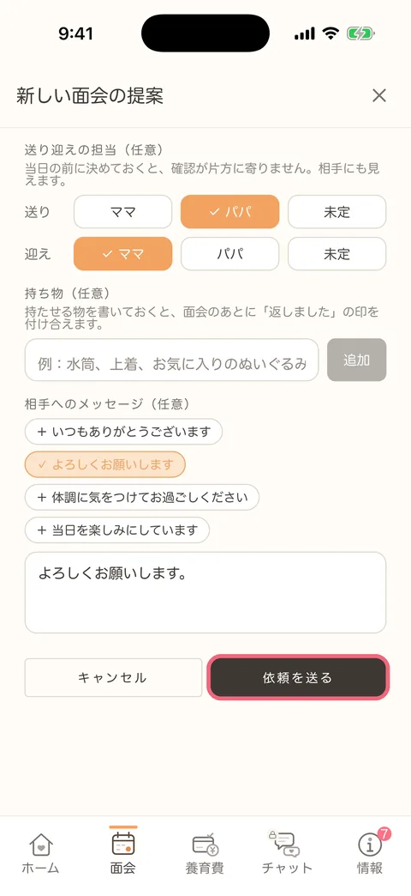
持ち物やひとことを添えて「依頼を送る」を押します。相手が承認すると予定が確定します。相手が参加する前は、そのまま確定します。
-
手順5予定の一覧を見る
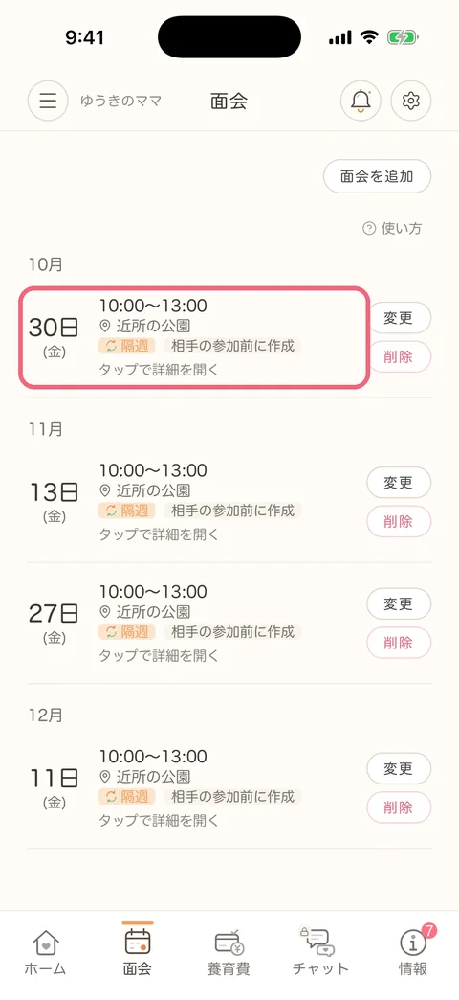
確定した予定が月ごとに並びます。予定を押すと詳しい内容が開きます。「変更」や「削除」もここからできます。
-
手順6当日の連絡と記録
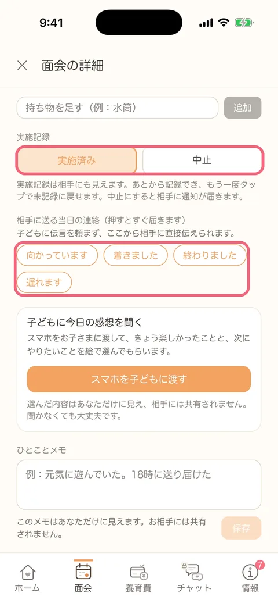
予定の「履歴・実施記録を見る」から詳しい画面を開きます。「向かっています」「着きました」などを押すと、すぐ相手に届きます。終わったら「実施済み」か「中止」を記録します。
-
手順7子どもの感想とメモ
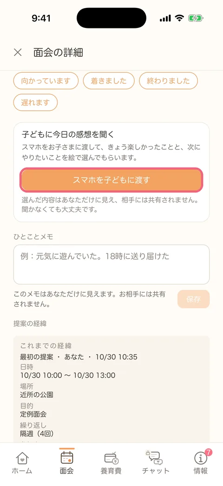
スマホを子どもに渡して、楽しかったことを絵で選んでもらえます。子どもの感想とひとことメモは、あなただけに見えます。
養育費
取り決めた金額と支払日を入れておくと、毎月の送金と受け取りを、ふたりで同じ記録として残せます。
横にずらすと、次の手順が見られます。
-
手順1取り決めを入れる
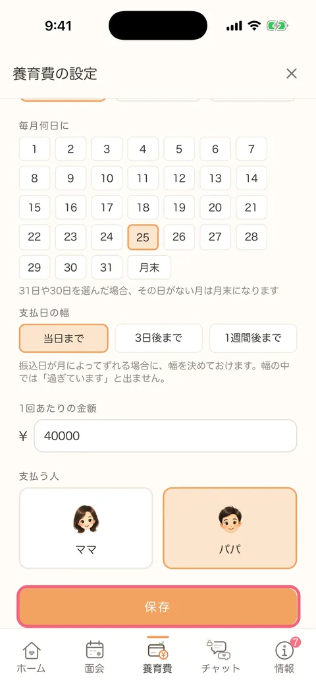
下のタブの「養育費」で、支払う日、金額、支払う人を選んで保存します。振込日が月によってずれるときは、支払日の幅も決めておけます。
-
手順2今月の分を確かめる
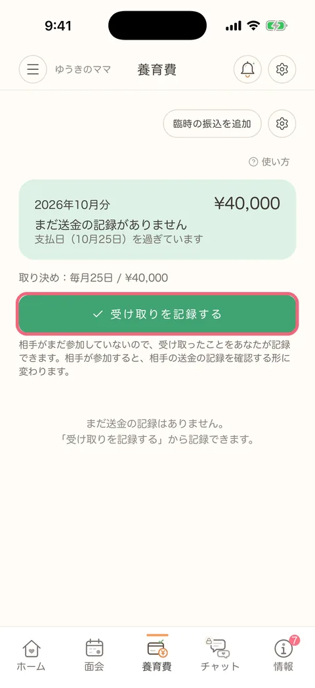
今月の分が届いたかどうかが、いちばん上に出ます。支払う側は「送金を記録する」、受け取る側は届いたら「確認」を押します。
-
手順3受け取りを記録する
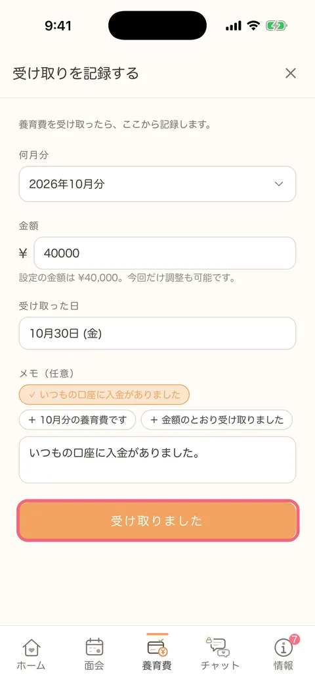
相手が参加する前は、受け取った側が自分で記録できます。何月分か、金額、受け取った日を確かめて「受け取りました」を押します。
-
手順4確認済みになる
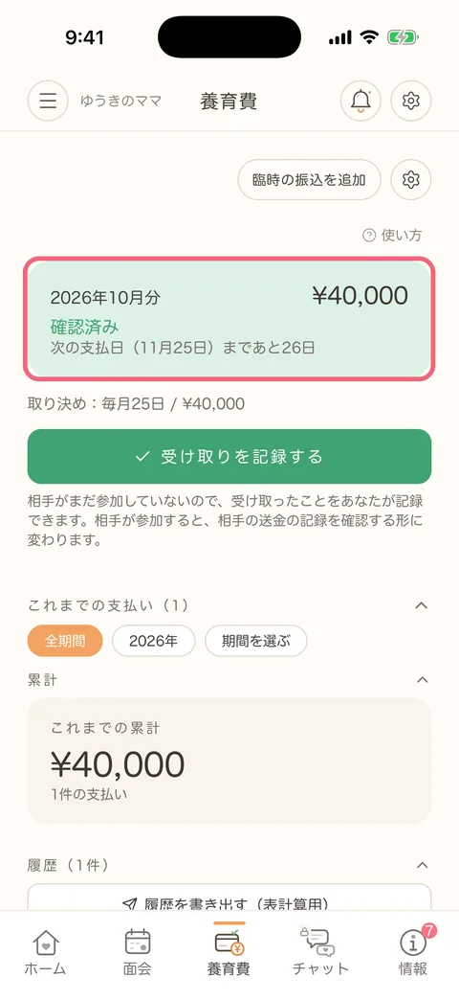
確認が済むと「確認済み」になり、次の支払日まで何日あるかが出ます。これまでの累計と履歴も同じ画面で見返せ、履歴は表計算用に書き出せます。
チャット
子どものことを、話題ごとに分けて話し合えます。自由に書いて話し合うには、相手との同意が必要です。返事に迷ったときは、AIに返信の候補を作ってもらえます。
横にずらすと、次の手順が見られます。
-
手順1相手に同意を依頼する
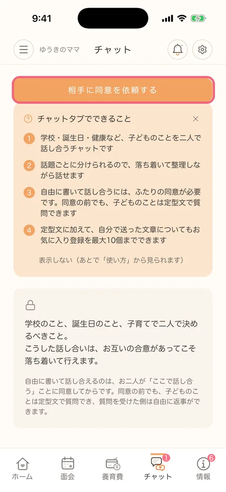
下のタブの「チャット」で「相手に同意を依頼する」を押します。相手が同意すると使えるようになります。同意の前でも、子どものことは定型文で質問できます。
-
手順2話題を作る
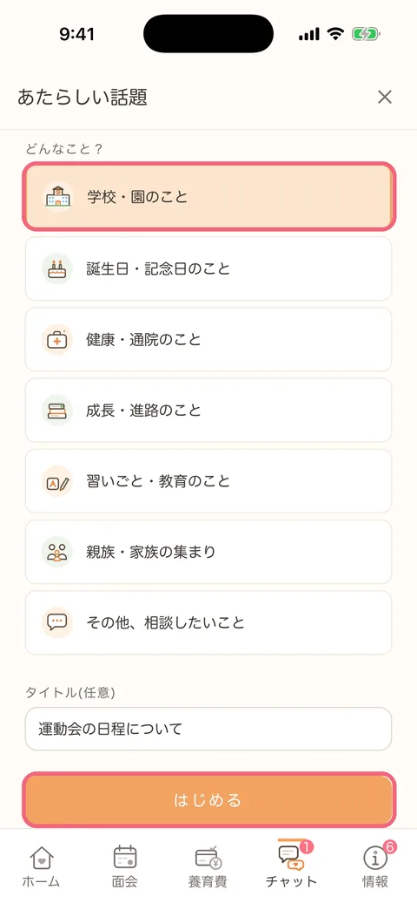
「新規チャット」を押し、学校や健康など、話したいことの種類を選びます。題名を付けて「はじめる」を押します。
-
手順3定型文から選ぶ
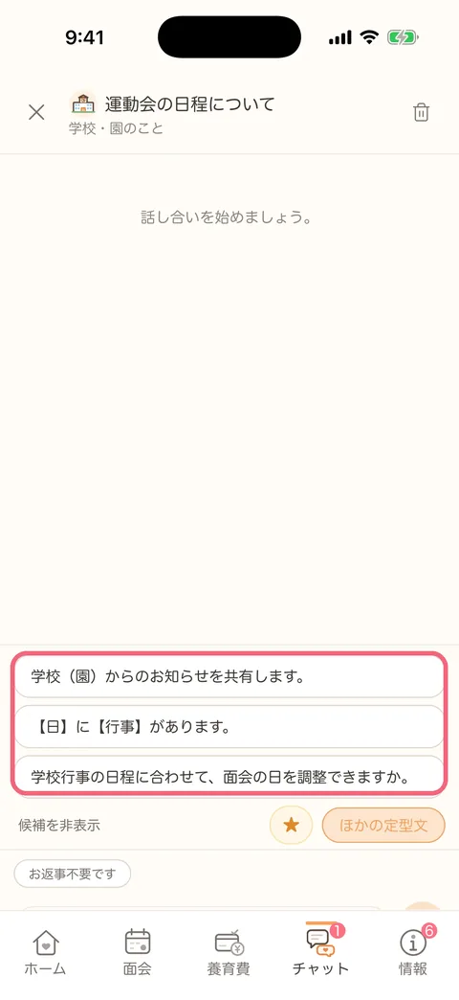
話題に合った定型文が出ます。押すと入力欄に入り、そのまま送るか、書き足してから送れます。
-
手順4送って、返事を待つ
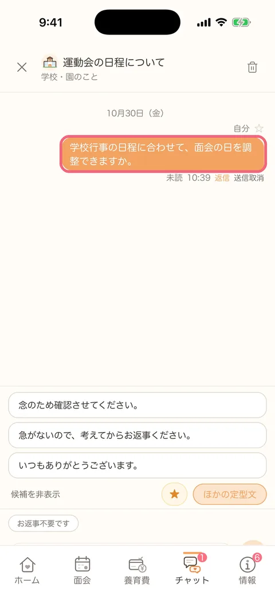
送った文には、相手が読んだかどうかが出ます。送ってから30分以内で、相手がまだ読んでいなければ「送信取消」で取り消せます。
-
手順5AIに返信の候補を作ってもらう
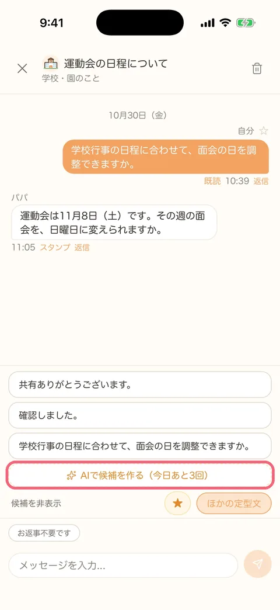
相手からの文への返事に迷ったら、定型文の下の「AIで候補を作る」を押します。初めて押したときは、何をAIに送るかの説明が出るので、読んでから「候補を作る」を押します。アカウントでログインしているときに使えます。
-
手順6候補を選び、直してから送る
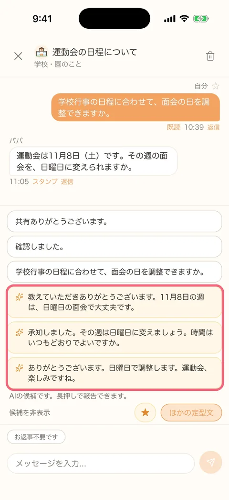
AIが返事の候補を3つまで作ります。押すと入力欄に入るので、自分の言葉に直してから送ります。無料で、1日3回、月10回まで使えます。使わないときは、メニューの「通知設定」でオフにできます。
お知らせを読む
はぐみぃからのお知らせ、法令や制度の新しい動き、離婚後の子育てに役立つコラムを、アプリの中で読めます。
横にずらすと、次の手順が見られます。
-
手順1「情報」のタブを開く
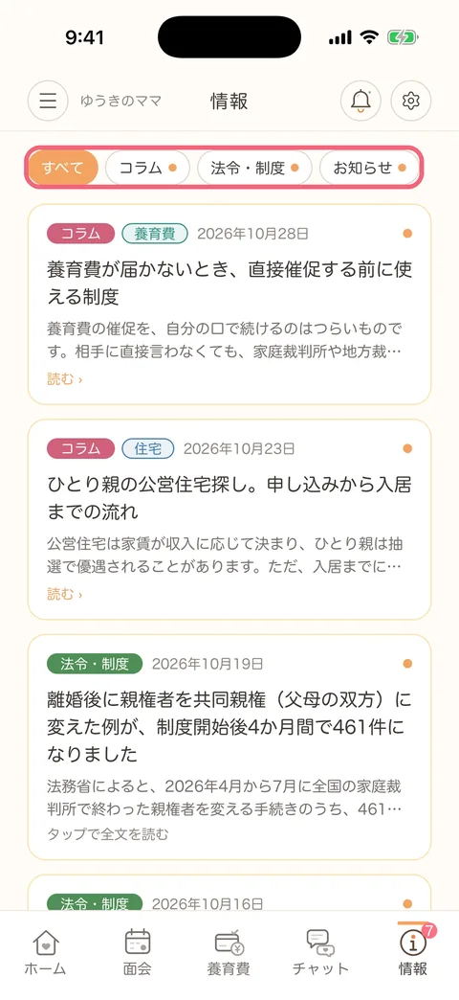
下のタブの「情報」を開くと、新しいものから順に並びます。まだ読んでいないものには、オレンジの丸が付きます。
-
手順2種類で絞り込む
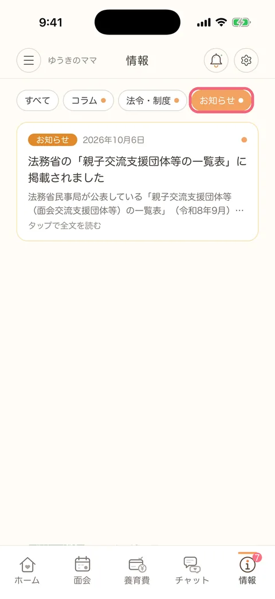
上の「コラム」「法令・制度」「お知らせ」を押すと、その種類だけを表示します。
-
手順3全文を読む
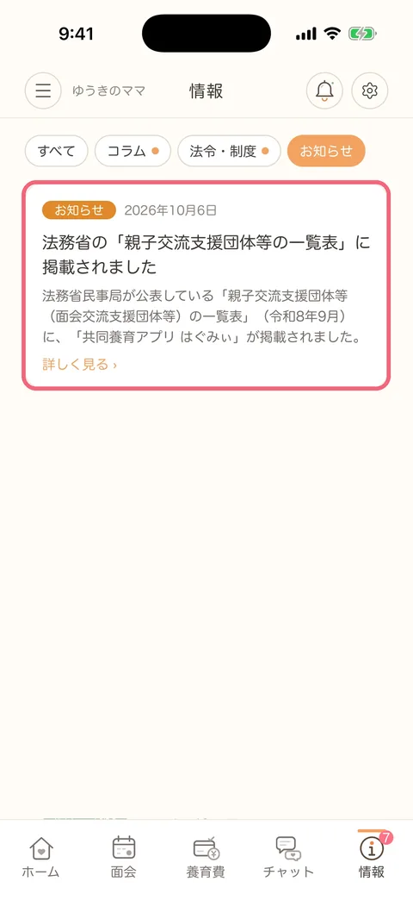
読みたいものを押すと全文が開きます。「詳しく見る」が出ているものは、そこから詳しいページも開けます。
運営への意見を送る
使いにくいところや、ほしい機能を、アプリから運営に直接送れます。いただいた声は、次の改善に使います。
横にずらすと、次の手順が見られます。
-
手順1メニューを開く
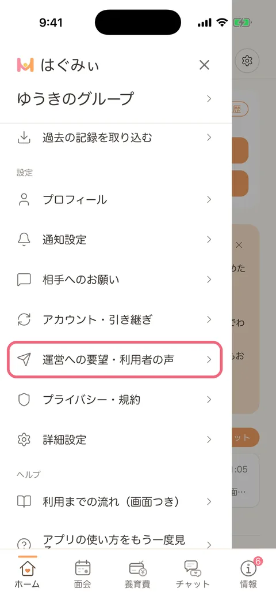
左上の三本線を押してメニューを開き、「設定」の中の「運営への要望・利用者の声」を押します。
-
手順2書いて送る
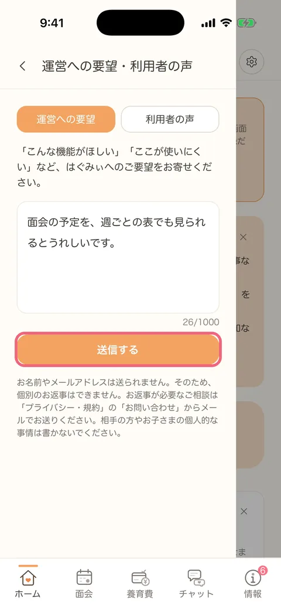
「運営への要望」を選び、思ったことをそのまま書いて「送信する」を押します。お名前やメールアドレスは送られません。
あわせて使うと便利な機能
面会や養育費を続けていくうえで、知っておくと安心な機能です。どこを押すと開くかを、機能ごとに画面で示します。
横にずらすと、次の手順が見られます。
-
手順1メニューを開く
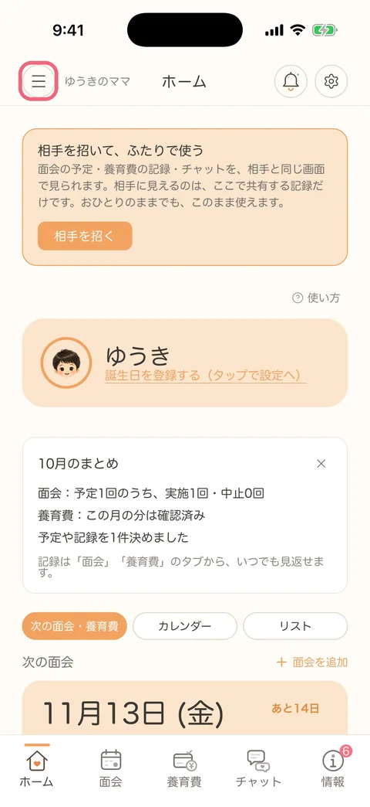
通知設定、取り決めの一覧、アカウント・引き継ぎは、メニューから開きます。左上の三本線を押すと、メニューが出ます。
-
手順2通知設定を開く
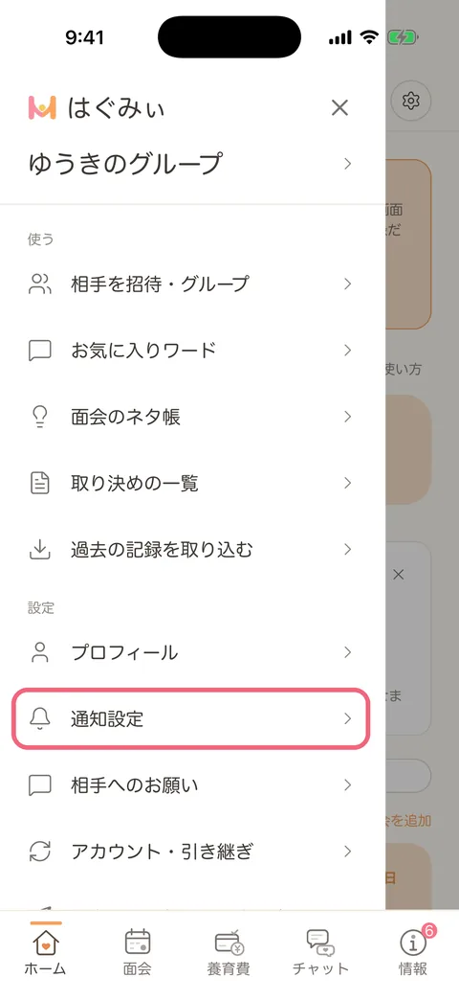
メニューの「設定」の中にある「通知設定」を押します。
-
手順3通知を必要なものだけにする
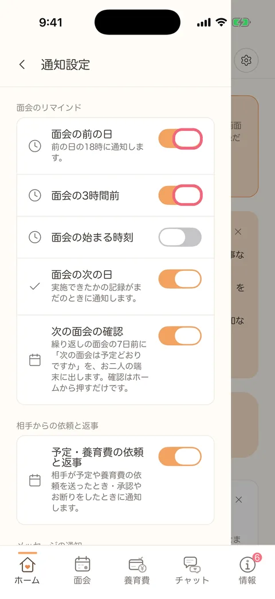
面会の前日や3時間前のお知らせ、相手からの依頼や返事の通知を、右のスイッチで入れたり切ったりできます。AIの返信候補を使うかどうかも、この画面で切り替えます。
-
手順4取り決めの一覧を開く
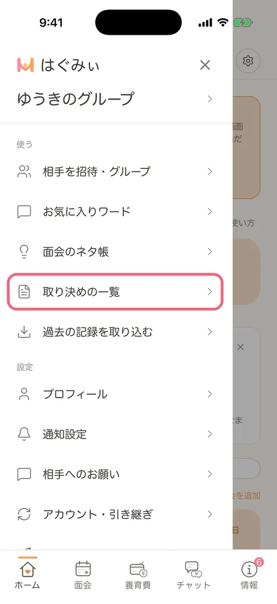
メニューの「使う」の中にある「取り決めの一覧」を押します。
-
手順5決めたことを見返す
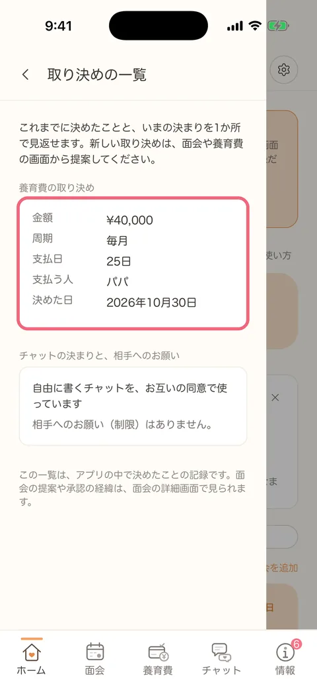
養育費の金額や支払日、チャットの決まりなど、これまでに決めたことが1か所にまとまっています。
-
手順6アカウント・引き継ぎを開く
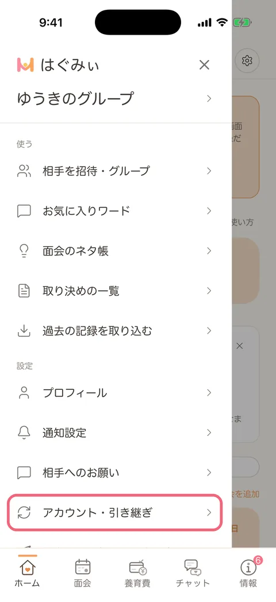
メニューの「設定」の中にある「アカウント・引き継ぎ」を押します。
-
手順7機種変更に備える
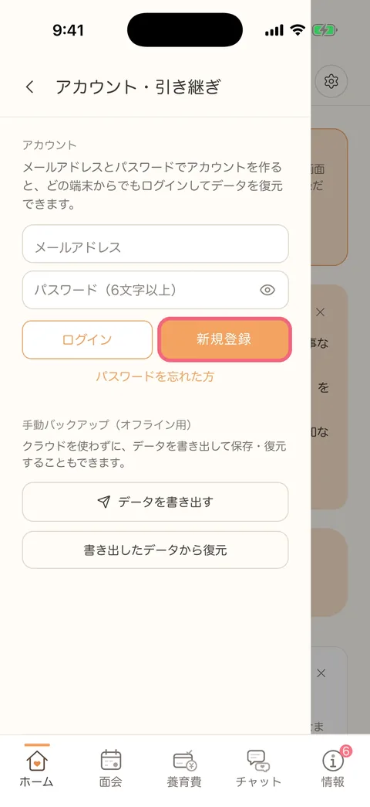
メールアドレスとパスワードを入れて「新規登録」を押しておくと、新しいスマホでログインするだけで同じ記録を使えます。
-
手順8鈴の印を押す
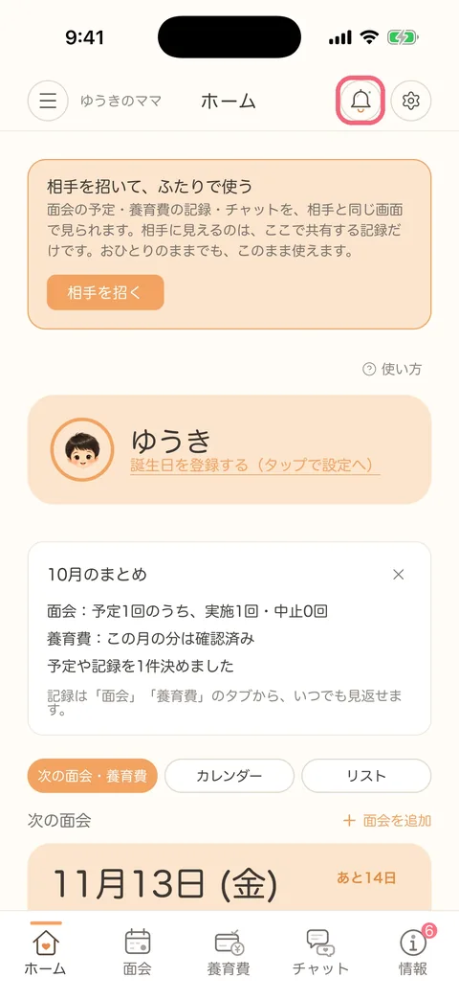
届いた通知は、画面の右上にある鈴の印を押すと開きます。
-
手順9届いた通知を見返す
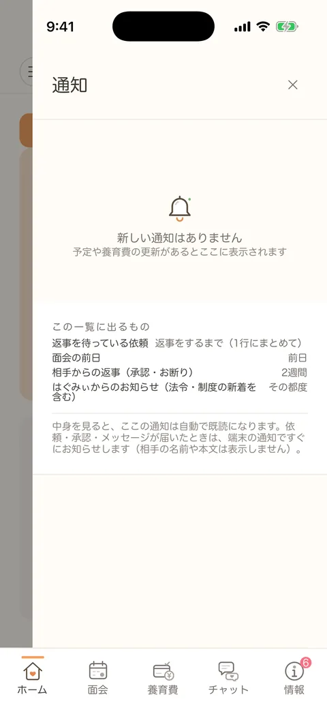
返事を待っている依頼や、面会の前日のお知らせが、まとめて並びます。中身を見ると、自動で既読になります。
画面の写真は、架空の名前と予定を入れて撮ったものです。お使いの端末やアプリの版によって、表示が少し違うことがあります。
同じ内容は、アプリのメニューの「利用までの流れ（画面つき）」でも見られます。
連絡先を交換せず、ふたりで子育てを続ける
面会の日程調整と養育費の管理を、アプリの中だけで共有できます。ダウンロードは無料です。